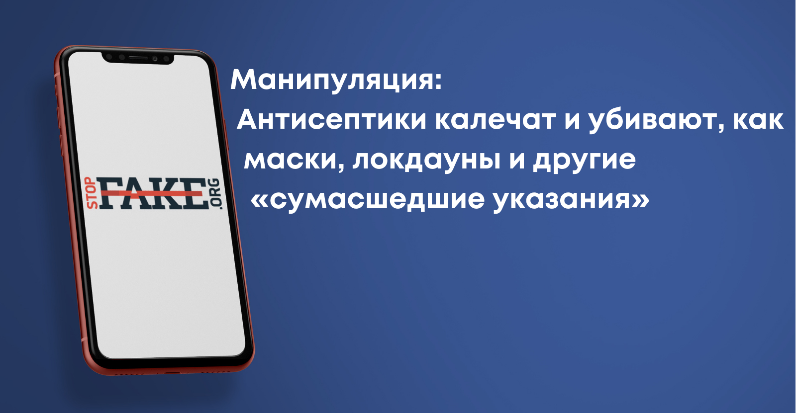
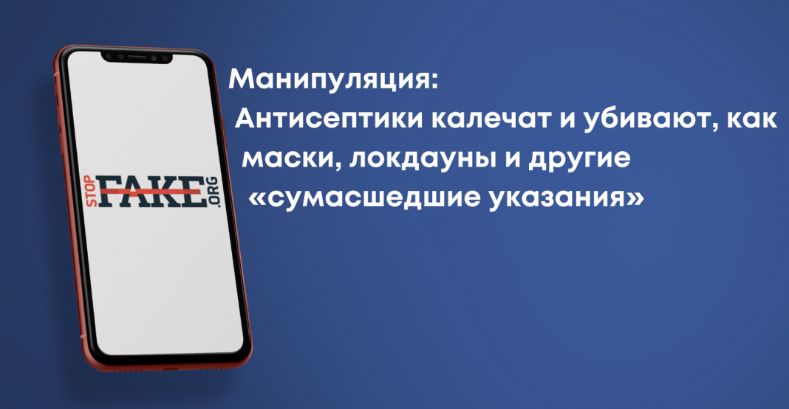

Манипуляция: Антисептики калечат и убивают, как маски, локдауны и другие «сумасшедшие указания»

Антисептики не представляют угрозы для жизни и здоровья человека, если используются по назначению.Также они являются дополнительным методом уборки помещений после классической очистки водой с мылом или моющим средством.Центры по контролю и профилактике заболеваний в США (CDC) рекомендуют использовать дезинфицирующие средства для рук на спиртовой основе, если нет доступа к воде, и обрабатывать ими поверхности в местах значительного скопления людей.
В социальных сетях распространяют статью, которая вышла на сайте Business Insider, под заголовком «CDC ослабил свои правила уборки для профилактики COVID-19, указывая, что интенсивные дезинфекторы скорее приносят больше вреда, чем пользы».Пользователи соцсетей посредством этой статьи утверждают, что антисептики вредны, «как и маски, локдауны и остальные безумные указания мировой медицинской бюрократии».Также статья на Business Insider сопровождается комментарием: «Весь этот метаноловый и другого сомнительного состава яд, которым запуганные люди пшикают себе на руки и тележки супермаркетов, обрабатывают подъезды и самолеты, КАЛЕЧИТ И УБИВАЕТ».Эти утверждения являются манипуляцией, поскольку таких выводов нет в статье на Business Insider , а лишь ее заголовок не дает представления о полном контексте заявлений Центров по контролю и профилактике заболеваний в США (CDC).

В тексте Business Insider идет речь об обновленных рекомендациях CDC по уборке жилых домов и не связанных с медициной предприятий, а также очищению различных поверхностей в них.Однако ни в статье, ни на официальном сайте Центров по контролю и профилактике заболеваний в США не сказано, что дезинфекторы вредны для здоровья, «калечат и убивают».Основным же недостатком антисептиков CDC считает нецелесообразность их дополнительного использования там, где можно обойтись давно известными средствами — водой и мылом.В четвертом абзаце статьи на Business Insider утверждают: «Вам не нужно тратить время на то, чтобы полностью уничтожить этот вирус на поверхностях с помощью спреев и дезинфицирующих средств».То есть главным аргументом против антисептиков в жилых домах и на предприятиях является потраченное время на дезинфекцию и не столь очевидный результат, а не опасность таких средств для жизни и здоровья человека.
На официальном сайте CDC в разделе об уборке предприятий сказано, что Sars-CoV-2 может попадать на поверхности.Люди могут заразиться, если они коснутся этих поверхностей, а затем носа, рта или глаз.В большинстве ситуаций риск заражения при прикосновении к поверхности невелик.Самый надежный способ предотвратить заражение через поверхности — регулярно мыть руки или использовать дезинфекторы для рук.Очистка и дезинфекция поверхностей также может снизить риск заражения.
Центры по контролю и профилактике заболеваний в США рекомендуют использовать дезинфицирующее средство для рук на спиртовой основе, содержащее не менее 60% спирта, если мыло и вода в определенный момент недоступны, а руки не сильно загрязнены.
CDC в некоторых случаях также рекомендует использовать метод дезинфекции во время уборки дома: «Вытирайте (
грязные и часто использующиеся поверхности — прим. ред. ) чаще, если люди в вашем доме имеют риск тяжелого протекания COVID-19.Вы также можете воспользоваться дезинфекцией.(…) Помимо уборки, проводите дезинфекцию дома, если кто-то болен или если в течение последних 24 часов в помещении находился человек с положительным результатом на COVID-19.Дезинфекция убивает все оставшиеся микробы на поверхностях и уменьшает распространение микроорганизмов».
Что касается предприятий, то им рекомендуется чаще проводить уборку либо дезинфекцию, если в коллективе наблюдается вспышка COVID-19, мало людей носят маски, недостаточно моют руки и если помещением пользуются люди с повышенным риском возникновения тяжелой формы коронавирусной болезни.Также на сайте CDC можно прочитать детальную инструкцию о том, как правильно проводить дезинфекцию поверхностей, белья и предметов обихода.
Центры по контролю и профилактике заболеваний в США называют несколько способов дезинфекции пространства (используемой зачастую на производствах), которые могут принести больше вреда, чем пользы для человека — это так называемые дезинфицирующие туннели (sanitizing tunnels), фумигация и другие подобные методы интенсивного распыления дезинфектора в помещении, где в это же время находятся люди.Однако эти способы являются довольно редкими.В цитируемой же статье Business Insider указано, что в США во время пандемии возросло количество обращений в медучреждения в связи с воздействием дезинфицирующих средств, поскольку люди пытались «импровизировать свои собственные способы избавления от вируса, часто используя очищающие средства не по назначению».
Дезинфекция должна быть направлена исключительно на поверхности с высокой степенью соприкосновения и места общего пользования, где встречаются незнакомые люди, пишет Business Insider.Именно это утверждение прямо противоречит комментарию в соцсетях о том, что в супермаркетах и самолетах якобы не стоит «пшикать себе на руки» и на другие поверхности антисептик.Также CDC настоятельно рекомендует носить защитные маски, придерживаться социального дистанцирования и соблюдать другие правила безопасности для предотвращения распространения COVID-19.
Следовательно, манипулятивные публикации в соцсетях базируются лишь на переводе заголовка статьи Business Insider, не вдаваясь в анализ полного текста, и вырывают данные о дезинфекции на сайте CDC из контекста для создания ложного представления о вреде антисептиков для здоровья и жизни человека.
Posted On: 2021-04-28T21:00:00
Content Date: 2021-04-28
Download Date: 2021-05-13
Document ID: L0C04C0YR